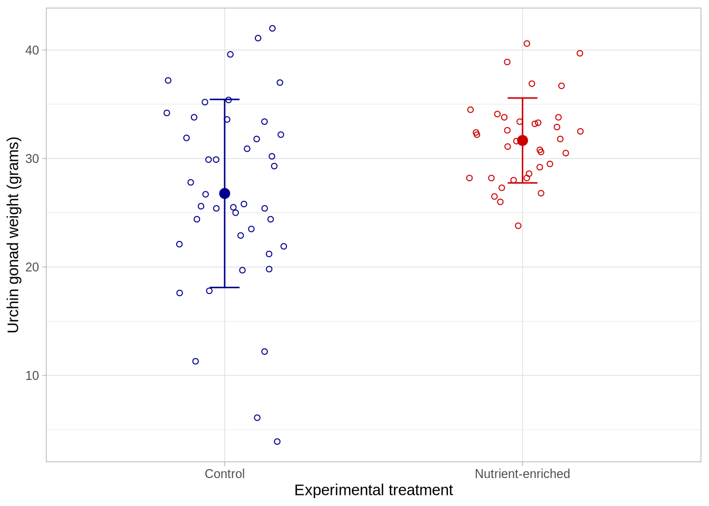
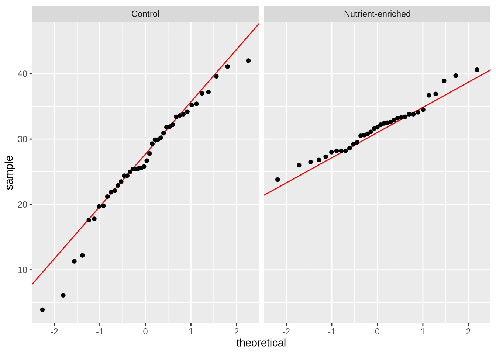

Code
# loading in packages
library("tidyverse")
library("janitor")
library("effsize")
# creating new object called urchins, storing data
urchins <- read_csv("urchin-experiment-data.csv") June 2, 2026
This is Problem 2 of my Homework 2 assignment, which is attached at the bottom of the page. In this problem, I used statistical testing to determine whether consumption of nutrient-enriched seaweed leads to increases in urchin gonad weight. Red sea urchin gonads are of high value in California’s fishing economy, so cultivating urchins with larger gonads would bring in more income.
Clean column names, select for preferred columns, and display 10 random rows from the data frame.
# create new object from urchins
urchins_clean <- urchins |>
# clean column names
clean_names() |>
drop_na() |>
# change c and n to be full words
mutate(experimental_treatment = case_when(
# fill in Control to replace c
experimental_treatment == "c" ~ "Control",
# fill in Nutrient-enriched to replace n
experimental_treatment == "n" ~ "Nutrient-enriched"
)) |>
# select experimental_treatment and gonad weight columns
select(experimental_treatment, weight_g)
# display 10 random rows
slice_sample(urchins_clean, n = 10)# A tibble: 10 × 2
experimental_treatment weight_g
<chr> <dbl>
1 Control 35.2
2 Nutrient-enriched 33.3
3 Nutrient-enriched 28
4 Nutrient-enriched 29.5
5 Nutrient-enriched 33.8
6 Nutrient-enriched 26.8
7 Control 30.9
8 Control 31.9
9 Control 34.2
10 Control 25 # A tibble: 2 × 4
experimental_treatment mean n sd
<chr> <dbl> <int> <dbl>
1 Control 26.8 42 8.67
2 Nutrient-enriched 31.7 35 3.91# start with the urchins_clean data frame
ggplot(data = urchins_clean,
# x-axis should be experimental treatment
# y-axis should be urchin gonad weight
# coloring by experimental treatment
mapping = aes(x = experimental_treatment,
y = weight_g,
color = experimental_treatment)) +
# first layer: jitterplot
geom_jitter(height = 0, # no jitter in vertical direction
width = 0.2, # small horizontal jitter
shape = 21) + # open circle shape
# second layer: represent means at each site
stat_summary(geom = "point",
fun = mean,
size = 3) + # make points bigger
# third layer: bars to represent standard deviation
geom_errorbar(data = urchins_summary, # use summary data frame
mapping = aes(x = experimental_treatment,
y = mean, # assign axes based on summary frame
ymin = mean - sd,
ymax = mean + sd,
width = 0.1)) + # make the bars narrower
# relabelling x- and y-axes
labs(x = "Experimental treatment",
y = "Urchin gonad weight (grams)") +
theme_light() + # custom theme
# custom colors
scale_color_manual(values = c("Control" = "darkblue",
"Nutrient-enriched" = "red3")) +
theme(legend.position = "none") # taking out legend
Null hypothesis: The difference in mean urchin gonad weight between urchins who consume normal seaweed and those who consume nutrient-enriched seaweed is equal to 0.
Alternative hypothesis: The difference in mean urchin gonad weight between urchins who consume normal seaweed and those who consume nutrient-enriched seaweed is not equal to 0.
# base layer: ggplot
ggplot(data = urchins_clean, # starting data frame
aes(sample = weight_g)) + # y-axis for QQ plot
# first layer: QQ reference line
geom_qq_line(color = "red") + # adding a color
# second layer: QQ plot
geom_qq() +
# creating "facets"
facet_wrap(~experimental_treatment) # show treatments separately
Urchin gonad weight is normally distributed because the data points follow a straight diagonal line with a 45 degree angle.
# A tibble: 2 × 2
experimental_treatment variance
<chr> <dbl>
1 Control 75.2
2 Nutrient-enriched 15.3[1] 4.915033
F test to compare two variances
data: weight_g by experimental_treatment
F = 4.9054, num df = 41, denom df = 34, p-value = 7.185e-06
alternative hypothesis: true ratio of variances is not equal to 1
95 percent confidence interval:
2.527793 9.330193
sample estimates:
ratio of variances
4.905405
Welch Two Sample t-test
data: weight_g by experimental_treatment
t = -3.2739, df = 59.238, p-value = 0.001774
alternative hypothesis: true difference in means between group Control and group Nutrient-enriched is not equal to 0
95 percent confidence interval:
-7.873119 -1.900214
sample estimates:
mean in group Control mean in group Nutrient-enriched
26.77619 31.66286 A t-test would have been appropriate for testing my hypothesis from part d because I am testing for a true difference in means between two groups. I evaluated normality by creating a QQ plot and evaluated homogeneity of variance by manually calculating the variances and running an F test. Because the group variances were unequal, I decided to do a Welch’s Two Sample t-test.
We found evidence to suggest that consumption of nutrient-enriched seaweed has a moderate effect (Cohen’s d = 0.70) on mean urchin gonad weights (Welch Two Sample t-test, t(59.2) = -3.27, p=0.002, \(\alpha\) = 0.05). On average, urchins who ate nutrient-enriched seaweed (n=35, mean=31.8) had higher gonad weights than urchins who ate normal seaweed (n=42, mean=26.7).
@online{symonds2026,
author = {Symonds, Stella},
title = {ENV {S} {193DS:} {Homework} 2},
date = {2026-06-02},
url = {https://stellassymonds.github.io/posts/2026-06-02-urchin-weights/},
langid = {en}
}